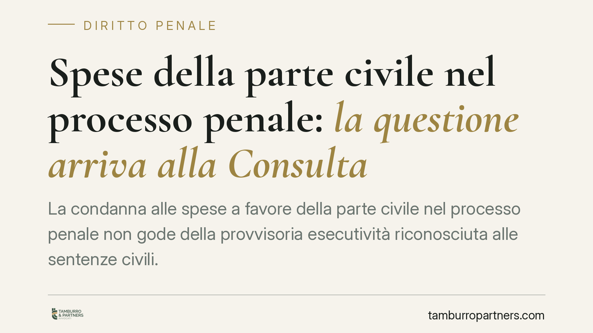

Spese della parte civile nel processo penale: la questione arriva alla Consulta
La condanna alle spese a favore della parte civile nel processo penale non gode della provvisoria esecutività riconosciuta alle sentenze civili. Una recente ordinanza interlocutoria ha sollevato dubbi di legittimità costituzionale sull'art. 541 c.p.p. La questione tocca chi si costituisce parte civile per vedere ristorati i costi della difesa. Vediamo perché conta e cosa cambia in concreto.

Il fatto
Una recente ordinanza interlocutoria della Corte di cassazione ha rimesso alla Corte costituzionale un dubbio di legittimità sull'art. 541 c.p.p., la norma che disciplina la condanna dell'imputato al pagamento delle spese della parte civile.
Il nodo è netto: quella condanna, a differenza di quanto avviene per le sentenze civili, non è assistita da provvisoria esecutività. In altre parole, il capo relativo alle spese non diventa un titolo eseguibile prima del passaggio in giudicato, salvo diversa statuizione.
> Nota di verifica: gli estremi dell'ordinanza (numero, data di deposito e sezione rimettente) vanno confermati sulla fonte ufficiale prima della pubblicazione. La questione, per come impostata, presuppone che il dubbio nasca in sede di esecuzione civile del titolo formatosi nel processo penale, o comunque nel giudizio di legittimità sul relativo capo. Questo collegamento processuale spiega perché a occuparsene possa essere una sezione civile: si controverte sull'efficacia esecutiva di un titolo, non sul merito penale.
Chi è la parte civile (e il responsabile civile)
La parte civile è il soggetto danneggiato dal reato che si costituisce nel processo penale per chiedere il risarcimento del danno e le restituzioni. Non persegue la pena, ma la tutela del proprio interesse patrimoniale.
Accanto a lei può comparire il responsabile civile: chi, pur non essendo imputato, deve rispondere civilmente del fatto altrui (si pensi all'assicurazione o al datore di lavoro). È il soggetto che, insieme all'imputato, può essere condannato al risarcimento e alle spese.
Inquadramento normativo
Occorre distinguere due profili, spesso confusi.
Il capo risarcitorio. L'art. 540 c.p.p. consente al giudice penale di dichiarare provvisoriamente esecutiva, a richiesta della parte civile, la condanna al risarcimento del danno e alle restituzioni. Può inoltre disporre una provvisionale immediatamente esecutiva, cioè un acconto sul danno. Qui, dunque, uno strumento di anticipazione esiste.
Il capo spese. Diverso è il regime dell'art. 541, comma 1, c.p.p., che regola la liquidazione delle spese processuali a favore della parte civile. Su questo capo non è prevista una provvisoria esecutività analoga a quella dell'art. 282 c.p.c., secondo cui la sentenza civile di primo grado è esecutiva per legge.
È questa asimmetria a fondare il dubbio di costituzionalità: perché chi ottiene ragione in sede civile può agire subito per il recupero delle spese, mentre la parte civile vittoriosa nel processo penale deve, di regola, attendere la definitività del titolo?
Sullo sfondo opera il principio proprio della provvisoria esecutività: essa anticipa il diritto accertato, ma ne addossa il rischio a chi la ottiene. Se il titolo viene poi riformato, le somme percepite vanno restituite. È un bilanciamento tra effettività della tutela e reversibilità dell'accertamento non ancora definitivo.
Implicazioni pratiche
Per chi si costituisce parte civile, la posta è concreta: il recupero delle spese di difesa. Oggi, senza provvisoria esecutività sul capo spese, l'attesa del giudicato può allungare i tempi di rientro dei costi sostenuti, con l'imputato che nel frattempo può ridurre la propria garanzia patrimoniale.
Per l'imputato e il responsabile civile vale il rovescio: un'eventuale pronuncia della Consulta favorevole all'estensione della provvisoria esecutività anticiperebbe l'obbligo di pagamento, pur restando fermo il rischio di restituzione in caso di riforma.
La decisione della Corte costituzionale, quando interverrà, inciderà quindi sulla strategia di spese parte civile e sulla gestione dei rapporti tra i vari soggetti del processo.
Cosa fare in concreto
- Verificate lo stato del capo spese nelle sentenze penali in corso: distinguete ciò che è già eseguibile (provvisionale ex art. 540 c.p.p.) da ciò che non lo è.
- Documentate con precisione le spese di difesa fin dalla costituzione, per una liquidazione solida e agevolmente eseguibile.
- Valutate gli strumenti cautelari a tutela del credito quando il patrimonio dell'obbligato appaia a rischio.
- Monitorate l'esito del giudizio di costituzionalità: un'eventuale declaratoria di illegittimità cambierebbe i tempi di recupero.
- Coordinate le sedi, penale e civile, quando l'esecuzione del titolo si sposta davanti al giudice civile.
Conclusione
La questione mette in luce una disarmonia di sistema tra spese liquidate in sede penale e in sede civile. In attesa della pronuncia, resta essenziale un presidio tecnico del capo spese fin dalle prime fasi del processo.
Contributo informativo a cura di Tamburro & Partners - Avv. Giuseppe Tamburro. Non costituisce parere legale.
Ogni condominio ha una storia a sé.
Se gestisci un'amministrazione e vuoi un confronto su una specifica questione condominiale, scrivi allo studio. Ti rispondiamo entro un giorno lavorativo.